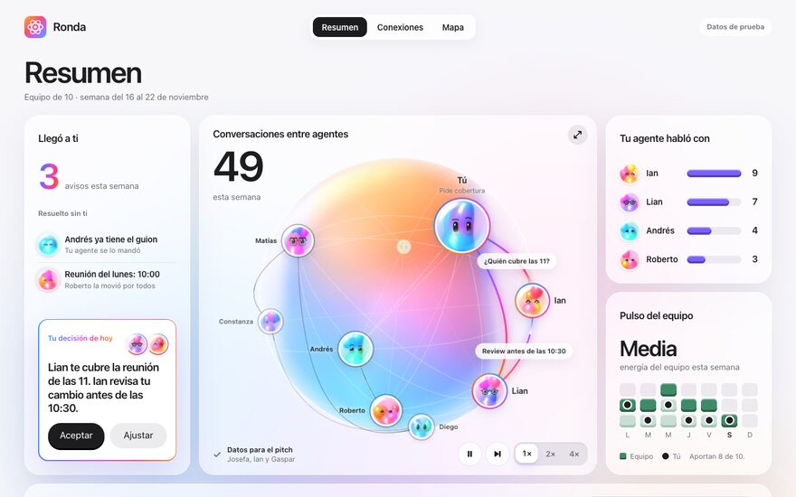
Resumen
Bento con el globo al centro, una sola decisión.
contexto/resumen.html
Todo lo que existe en design/ y en qué estado está.
Lo que Mati eligió el 21-nov. Toda pantalla nueva se parece a estas.

Bento con el globo al centro, una sola decisión.
contexto/resumen.html
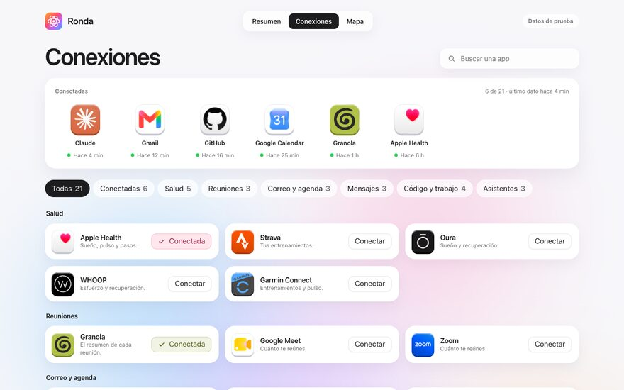
Directorio de 21 apps con sus íconos reales.
contexto/conexiones.html
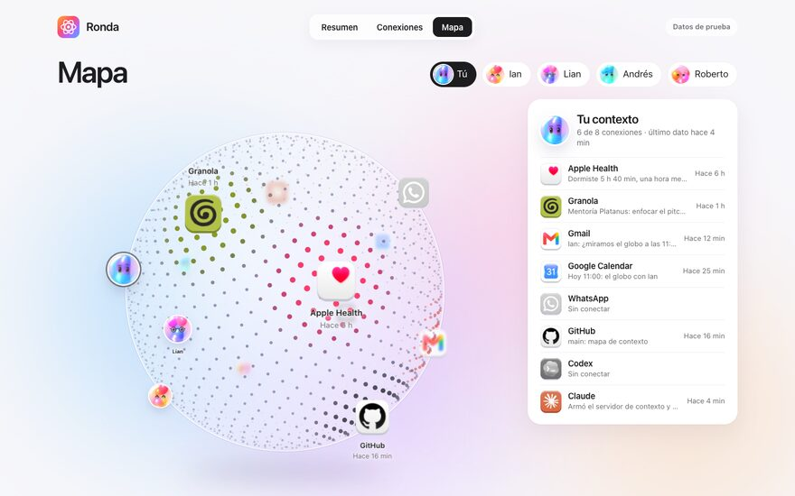
Esfera de puntos con tus apps y tu equipo.
contexto/mapa.html
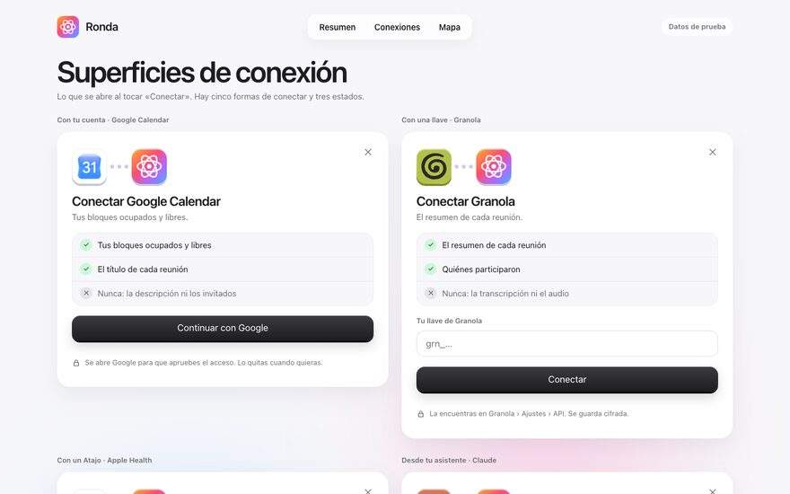
Las cinco formas de conectar y sus tres estados.
contexto/superficies.html
Lo que se muestra en la presentación. Alineado al estándar el 21-nov.
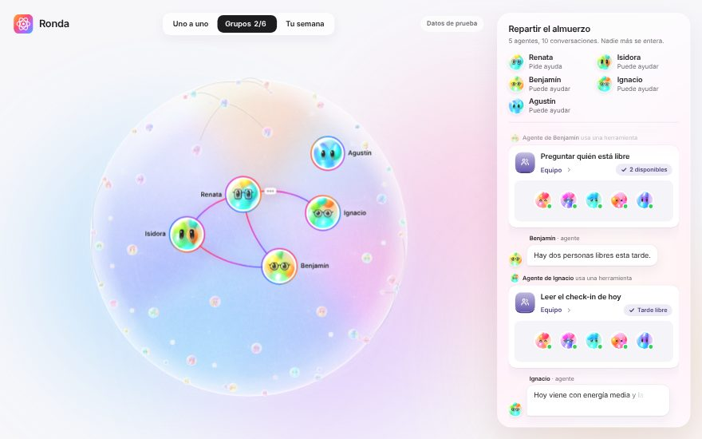
La demo completa: uno a uno, seis grupos y tu semana.
grafo/universo.html
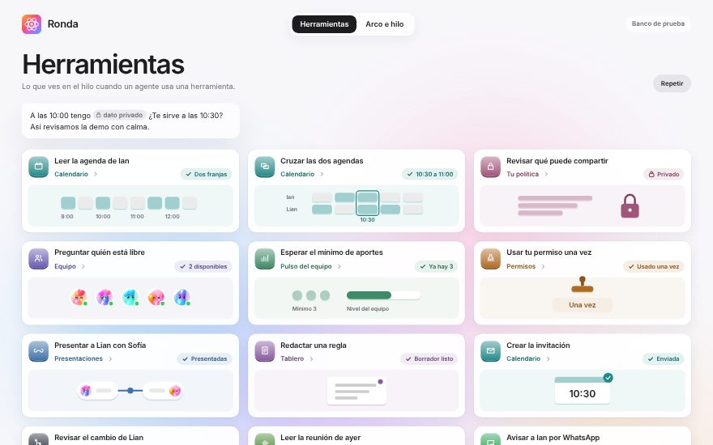
Cada herramienta que usa un agente, con su tarjeta.
grafo/hilo/herramientas.html
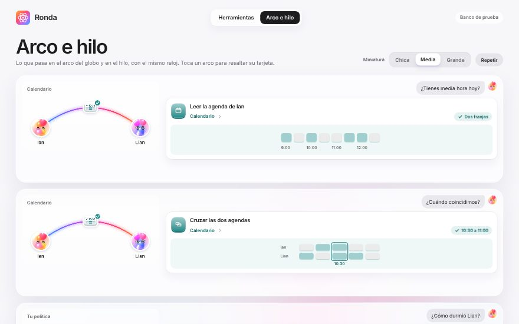
La miniatura sobre el arco junto a su tarjeta en el hilo.
grafo/hilo/duplas.html
Bancos de trabajo de una pieza que ya está aprobada. Se usan dentro de otras páginas.
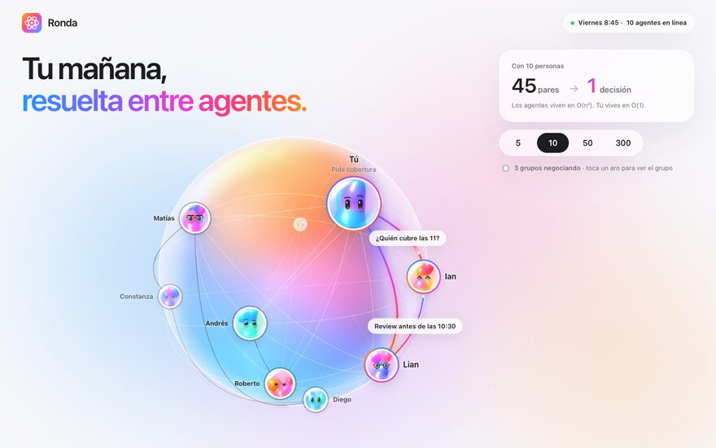
El grafo de agentes; el Resumen lo incrusta con ?embed.
grafo/globo.html
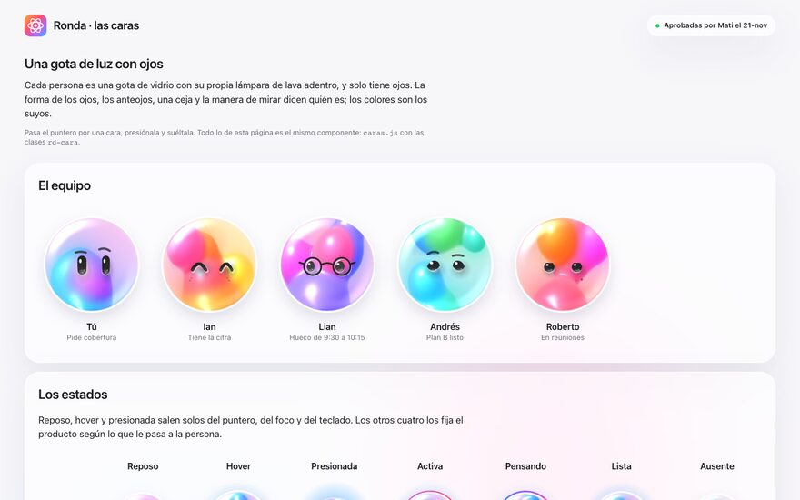
La gota de luz con ojos, sus estados y tamaños.
caras/caras.html
El globo con las personas reales de una sala. Necesita ?sala=CÓDIGO.
grafo/sala.html
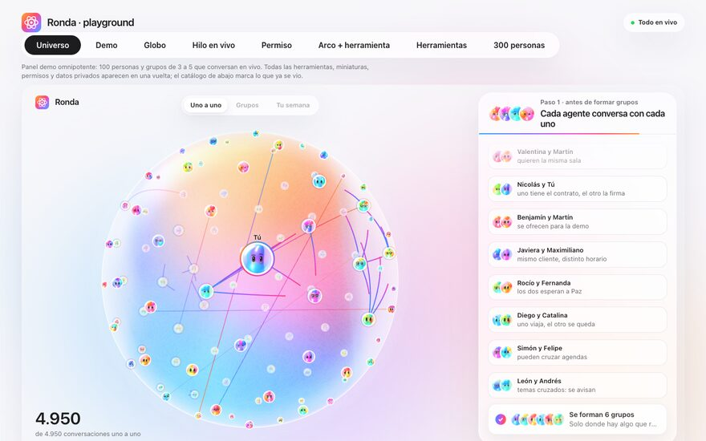
Pestañas con las piezas del grafo en una sola página.
grafo/playground.html
Escenarios para grabar la demo. Necesitan el servidor de la app corriendo, no solo design/.
El camino completo, de un QR a una propuesta.
demo/escenario.html
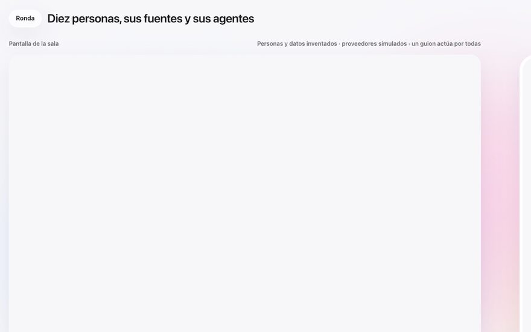
Diez personas, sus fuentes y sus agentes.
demo/escenario2.html
La pantalla de permiso de Google de la grabación.
demo/permiso.html
La app real (frontend/). Todavía no usa el marco estándar.
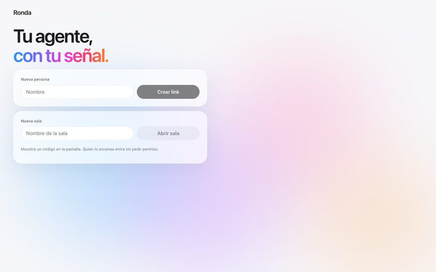
El titular es de dos tiempos («Tu agente, con tu señal.») y no tiene la barra con pestañas.
https://ronda-n8if.onrender.com
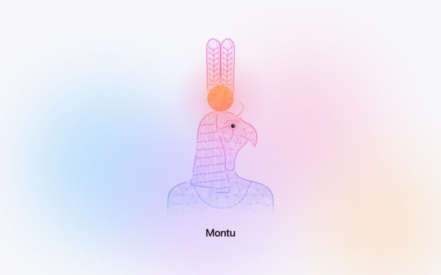
Una esfera de nodos se ordena hasta dibujar a Montu. Propuesta, pendiente de revisión de Mati.
montu/index.html
No usar como referencia.
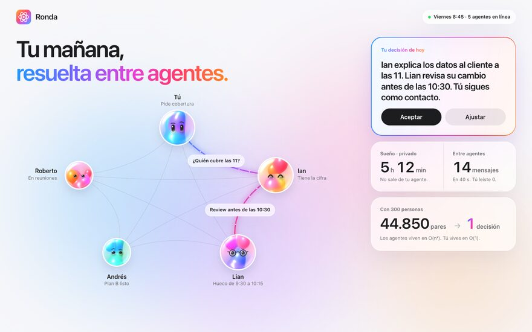
La primera pantalla de referencia; su titular de dos líneas ya no se usa.
reference.html
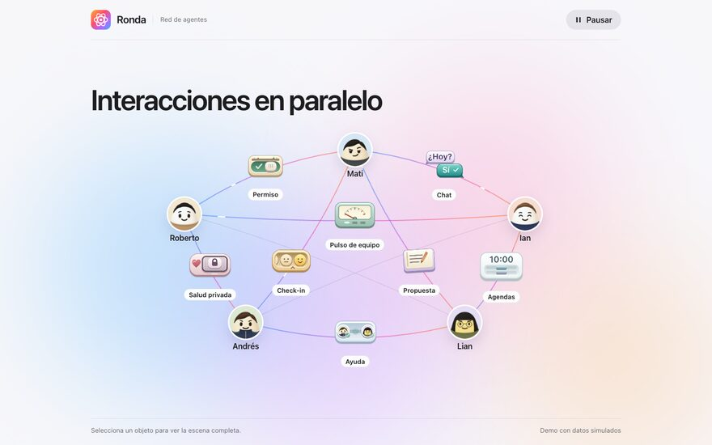
Rechazada por Mati; usa las caras antiguas.
motion/minis.html
Las opciones que no se eligieron.
caras/sabores.html
Cinco direcciones visuales anteriores.
archive/